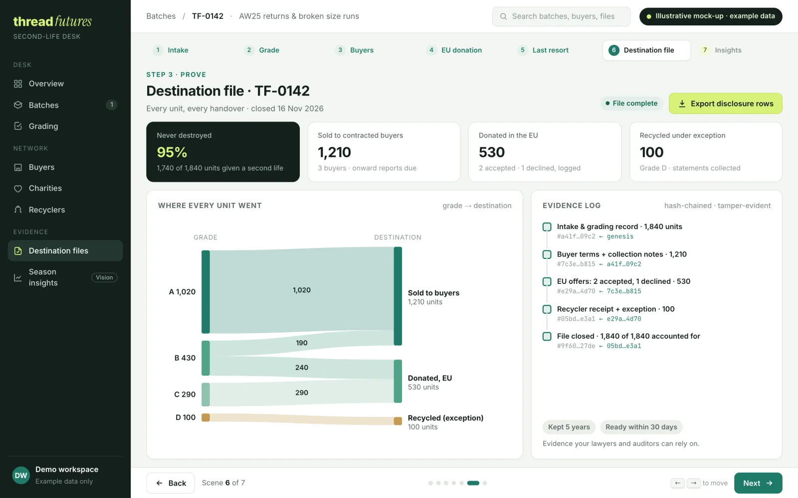

We clear fashion brands' unsold stock without destroying it.
Since July 2026, large fashion brands selling into the EU, including UK brands, can't destroy unsold clothes. We clear that stock end to end and give them a complete record of where every item went.
Brands get four things: more money back than a liquidator would pay; brand protection, through anonymous lots and limits on where stock is resold; compliance handled, from donation to legal recycling, with the record for EU reporting; and, over time, insight into what didn't sell and why, so they produce less.
Like Phenix (about €20m revenue in France, for food and household goods), built for fashion.
Honest status: pre-launch, no customers yet. Since 16 November 2026 we've been talking to brands, resale buyers, EU charities and warehouses to test the idea.
Every unit a second life, and the proof.
Three steps.
We coordinate, match and keep the record. Partners do the physical work: warehouses grade, buyers collect, charities receive, recyclers process. We never buy stock.
- 1 · Grade
Check what's in the batch
A partner warehouse grades every item: size, condition, and fibre from the brand's own product specs. Lots finally match their paperwork.
- 2 · Place
Find every item a home
Vetted resale buyers first, who agree not to destroy it, accept limits on where it is resold and tell us where it goes next (lots stay anonymous until the brand approves them; de-labelling where needed). Then EU charities, with the transport paid. Recycling only as a last resort, under the correct legal exception.
- 3 · Report
One complete record per batch
Every item and every handover, recorded as it happens, ready for the brand's EU reporting. Kept 5 years, ready within 30 days if a regulator asks, with rows for the EU disclosure.
Starting with premium and mid-market UK brands whose stock is already in EU warehouses, so nothing has to cross the UK–EU border. See an illustrative batch ↓
The easy stock already sells. The rest has nowhere to go. TK Maxx and other off-price chains buy current, full-size-run stock directly from brands. The problem is everything else: returns, damaged goods, odd sizes and old seasons. Since 19 July 2026, large brands can't destroy it in the EU.
- Jobbers
Take it cheaply
Liquidators take whole lots for around 5–20% of retail price, but can't say where the goods end up.
- Charities
Willing, but can't afford it
French charities turn down 15–20% of the donations they're offered, mostly because they can't pay to move or store them.
- Recyclers
Now counts as destruction
Under the EU rules, recycling unsold clothes counts as destroying them unless a documented legal exception applies.
We grade the stock, sell it to resale buyers who agree not to destroy it, donate the rest to EU charities with the transport paid, recycle only what's damaged beyond repair, and give the brand a complete record of where every item went. The brand recovers more than a liquidator would pay, stays protected, has compliance handled and, over time, learns what didn't sell and why.
Have stock you can't place? Book a 20-minute call →One batch of 1,840 returns, step by step.
Batch TF-0142: 1,840 items of autumn/winter 2025 returns and broken size runs (knitwear and outerwear) from an unnamed premium brand, already in an EU warehouse.
Illustrative Example figures, not a real brand or a real batch. We have no customers yet.
sold to resale buyers who agree not to destroy it
donated to EU charities, transport paid
recycled as a last resort (damaged beyond repair)
never destroyed: 1,740 of 1,840 items given a second life
| Step | Items | Where it went | Record kept |
|---|---|---|---|
| Resale buyer Off-price, Germany · grade A | 720 | Sold, brand anonymous until approved | Sale contract (no destruction, no export as waste), report of where it went next |
| Resale buyer Stocklot, Poland · grade A | 300 | Sold | Sale contract, onward report |
| Resale buyer Resale partner · grade B, repaired | 190 | Repaired and resold | Sale contract, onward report |
| EU charity France | 310 | Donated, transport paid | Offer, acceptance and handover records |
| EU charity Netherlands | 220 | Donated, transport paid | Offer, acceptance and handover records |
| EU charity Belgium | 0 | Declined | Offer and refusal logged (this counts as evidence too) |
| Licensed recycler Last resort · grade D | 100 | Recycled under a recorded legal exception | Legal exception statement and recycler's receipt |

The brand pays, buyers pay for the goods, and charities receive the support they need to accept them.
Brands
Hand over the stock you can't sell. You recover more than a liquidator would pay, your name stays hidden until you approve a buyer, compliance is handled with one complete record per batch, and over time you see what didn't sell and why. Logistics, repair, sorting and recycling are done by partners and passed through at cost. We don't buy stock.
Resale buyers
Off-price, stocklot and resale buyers get graded lots that match their paperwork. In return they sign terms: no destruction, no export as waste, limits on where it's sold, and a report of where the goods went.
EU charities
Charities and social enterprises in the EU get lots sorted to their needs, with the transport paid from the brand's fee. Every offer and decision is logged.
The brand pays. We test the price in pilots.
Pricing is a hypothesis we'll test with the first paid pilots. Nothing here is a quote.
Pilot, pay on results
One batch: a £1,000 set-up fee plus 15% of the money we recover. Low risk for the brand.
Season subscription
Once a pilot has worked: a season's leftover stock handled, priced by brand size, plus 10% commission on money recovered.
Logistics and partners
Transport, repair, sorting and recycling are passed through at cost. We never buy stock.
Hypothesis Illustrative: a £100m-revenue brand might get about £175k a year more back than its liquidator pays; we would earn a £6–18k subscription plus about £17k commission. Phenix earns about 80% of its revenue from subscriptions.
The ban is live, fines start, and the evidence is the brand's job.
The ban
Under EU Regulation 2024/1781, large companies may not destroy unsold clothing and footwear from 19 July 2026; medium-sized companies follow from 19 July 2030. "Destruction" includes recycling and energy recovery unless one of the ten exceptions in Delegated Regulation (EU) 2026/296 applies.
The donation exception needs the goods to have been offered for at least 8 weeks, either directly to at least three suitable social-economy entities in the EU or on an easily accessible page of the brand's own website, and not accepted. UK charities don't count. Most brands won't want a public "unsold stock" page, so the discreet three-entity route is the brand-safe one.
The fines
Germany: up to €100,000 per destruction breach and €10,000 for disclosure breaches, from 1 November 2026. France (AGEC): up to €15,000.
The evidence duties
Brands must keep evidence for 5 years and provide it electronically within 30 days of a request, and hand a derogation statement to the waste operator. The disclosure duty already applies to large firms; the mandatory standard format (Implementing Regulation (EU) 2026/2) applies to financial years starting on or after 2 March 2027, so the first standard-format filings land around 2028–29 for calendar-year firms.
This is general information, not legal advice.
"Can we destroy stock if a donation is refused?"
- Art 25(5)Derogations may be set for reasons including non-acceptance of products offered for donation.
- Art 24(1)Operators that discard unsold products disclose numbers, weight and reasons each year.
- Art 25(1)From 19 July 2026, destruction of products listed in Annex VII is prohibited.
Paraphrased from the regulation by a search tool the founder built. It finds the right article in its top three results for 21 of 22 test questions. Not legal advice.
From clearing stock today to helping brands make less.
We make the better option the easy one, then use what we learn to help brands make less.
- 1 · Now, 2026–27
Clear the stock
The service we're starting with: paid pilots, then season subscriptions, starting with UK brands' stock already in EU warehouses.
- 2 · Next, 2027–30
Become the shared record
The batch record becomes the common record of where fashion's surplus goes, shared by brands, buyers, charities and recyclers. Mid-size warehouses can offer it to their own clients. Standard-format disclosures arrive around 2028–29, and medium-sized brands join the ban from July 2030.
- 3 · Long term
Help brands make less
Every batch records what didn't sell, where and why. Across many brands, that tells merchandising teams what to make less of next season. This is where my forecasting background helps most.
Pre-launch. No customers yet.
- Status
- Pre-revenue, not yet incorporated, started in November 2026. Solo founder in London, recruiting a co-founder from fashion operations. No customers, signed buyers, charities or partners yet, and no batch handled.
- Talking to
- Since 16 November 2026, interviewing brands, resale buyers and EU charities, from more than 140 named contacts. Target by February 2027: 15 brands, 5 resale buyers, 3–5 EU charities, 2–3 mid-size fashion warehouses and one lawyer.
- Support
- Northeastern University London Startup Hub, Barclays Eagle Labs Demo Directory, NatWest Digital Boost, and YC Co-Founder Matching.
- Decision
- On 10 February 2027 we decide: go, keep testing, narrow, or stop. If 11 of 15 brands say their current liquidator already covers it, we narrow or stop.
- Built
- The batch-record system is planned, not built; the clickable prototype and the screen above are mock-ups with example data. Earlier software I built is further down this page.
Why I care.
Over the last five years it feels like we've been buying more than ever. More clothes, more deliveries, more things worn twice and forgotten. What bothers me most is how normal it's become.
Perfectly good clothes get shredded or burned because that's cheaper than finding them a home, and most of us never hear about it. I don't think the answer is making people feel guilty. I think it's making the better option the easy one: finding every unit a second life, and being able to show where it went.
I've spent my career turning messy data into things people can act on, and I studied AI because I wanted to understand the technology behind the decisions we're starting to hand over to it. Thread Futures is me pointing those skills at a problem I actually care about: using what we already have, instead of making more of what nobody buys.
A bit about me
I'm Cathy Liu, a data analyst from California, now in London. I spent seven years as a data analyst, building forecasts and analytics where mistakes cost real money: treasury at Bank of Hawaii, workforce analytics at Hawaiian Airlines, then healthcare data at Gaine. I recently finished an MSc in AI and Data Analytics (Merit) at Northeastern University London; my dissertation tested whether AI models ask the right questions before giving financial advice. From September 2023 to August 2025 I also ran Cat Liu Media, my own digital marketing business, finding five clients and writing every proposal myself, and delivering Google Ads, Analytics and SEO work. I have also hosted meetup groups for two years.
Before you ask.
Who is it for?
First, premium and mid-market brands led by clothing and footwear that count as "large" under the EU rules and sell into the EU or Northern Ireland, starting with UK brands that hold stock in EU warehouses, plus EU brands. Handbags and small leather goods appear to fall outside the ban, so bag-led brands aren't our first focus. Medium-sized firms are covered from July 2030; small and micro firms are exempt. Stock sold only in Great Britain is out of scope today.
Is it live?
Not yet. We're pre-launch with no customers yet. Since 16 November 2026 we've been talking to brands, resale buyers, EU charities and a few mid-size warehouses. The batch-record system is planned; the screen on this page is a mock-up with example data.
Do you buy or hold stock?
No. The brand pays us; buyers pay for goods; charities pay little or nothing. Logistics, repair, sorting and recycling are done by partners and passed through at cost.
What will it cost?
Not set yet; we'll test it in paid pilots. The working idea is a pay-on-results pilot (one batch: £1,000 set-up plus 15% of the money recovered), then a season subscription of £500–1,500 a month depending on brand size, plus 10% commission. This is a hypothesis.
Why not just call TK Maxx?
For clean, current stock in full size runs, you should. TJX buys directly from around 21,000 vendors. We don't compete for that stock.
We handle what they won't take, or what liquidators take cheaply with no record: returns, damaged goods, broken size runs and old seasons. And we give you the record of where it went.
Why start with stock already in the EU?
Since Brexit, moving goods from the UK into the EU means customs paperwork, duties and delays, which eat into what leftover stock is worth. Otrium closed its UK site in 2023 for that reason. So we start with stock already sitting in EU warehouses.
Don't waste companies and big warehouses already do this?
Some do parts of it. PreZero ReValue, part of a large waste group, takes ownership of overstock and resells it abroad. Big fashion warehouses such as Bleckmann have their own repair and resale arms for their own clients. We're independent and built for fashion: the brand keeps control, we work with any warehouse, place each batch across buyers, EU charities and (only as a last resort) recyclers, and give one record across all of it. We'd rather partner with mid-size warehouses than compete with them.
Do UK charities count for the donation exception?
No. The donation exception needs goods offered for at least 8 weeks to at least three suitable social-economy organisations in the EU (or on a public page of the brand's own website) and not accepted. That's why our charity network is EU-based.
Will we get a label or logo to show customers?
No. Since September 2026, EU law bans sustainability labels that aren't backed by an independent certification scheme, and not destroying stock is now a legal duty for large brands. What we give you is evidence your lawyers and auditors can rely on. Have your own lawyer check any public claim.
Why not just use ChatGPT?
A general AI assistant can explain the regulation, analyse a stock file or draft a disclosure template. Much of the software I built earlier could be reproduced that way, which is why software isn't what we sell.
What a chatbot can't do: contract buyers, grade goods physically, pay a charity's transport, or create a charity's acceptance or a recycler's receipt after the fact. The record is made of documents created at each handover.
Is this legal advice?
No. Everything on this site is general information, not legal advice. Some questions, such as whether a brand is liable if a buyer later destroys goods, are not settled; we plan to have a lawyer review contract terms, and we write no-destruction and reporting clauses into sale contracts.
Have unsold stock you can't place?
We're talking to brands with unsold stock, off-price, stocklot and resale buyers, and EU charities and social enterprises. A 20-minute call helps shape what we build.
Book a 20-minute callOr email Cathy directly
Before settling on this service on 12 November 2026, I built software and models. They show I can build; they are not the product and not a reason to buy. Everything below is a separate, earlier project.
What I've built so far.
A stall-risk model on real open retail data (not fashion), a regulation search tool, a tested data pipeline and an API. A fabric-waste forecast on simulated data is parked. None of this is the service above.
Stall-risk model: ROC AUC for spotting lines about to stop selling, vs 0.60 for a simple sales-trend rule (real open retail data, not fashion)
Regulation search: right article in the top three results for 21 of 22 test questions
automated checks on the data and code, run on every change
- Stall-risk model runs in the browser; click any line to score it
- CI: every change runs the tests, builds the Docker image and calls the API
- Monitoring report: drift and calibration by launch quarter
- dbt models on 1.06m real sales lines, 22 data tests
- Batch-record prototype for the service (grading, buyer terms, charity offers and refusals, recycler statements, disclosure rows) Planned
# clone and start the API git clone https://github.com/catliugit/ThreadFutures cd ThreadFutures && docker build -t threadfutures . docker run -p 8000:8000 threadfutures # score a line's first 12 weeks curl -X POST localhost:8000/v1/stock/stall-risk \ -H "Content-Type: application/json" \ -d '{"early_units_per_week":27,"early_trend":0.4, "early_zero_week_share":0.17,"early_customers":30, "early_orders":39,"early_return_rate":0.02, "early_max_markdown":0,"launch_list_price":2.95, "launch_month":3,"is_seasonal_christmas":false}'
Code and method notes: github.com/catliugit/ThreadFutures
Stall-risk model: spot lines likely to stop selling.
A model I built that scores a product line from its first 12 weeks of sales. It is earlier work, shown as proof I can build. It is not the service and not a reason to buy.
- What's real
- The model is built and runs in your browser, on real open retail data (UCI Online Retail II, a UK online retailer, not fashion and not a customer).
- What it isn't
- It isn't the product. The service (clearing unsold stock with a record of where it went) is planned, not built.
Tip: click a line in the table below to load its real first 12 weeks.
| Line | Launched | Units / week, first 12 wks | Stall risk | Units / week, wks 12–25 | Outcome |
|---|
Fabric offcut forecast: an earlier idea, parked.
My first idea (early November 2026) was forecasting how much fabric a cutting run leaves over. It is parked: not part of what Thread Futures offers. It stays here only as proof I can build.
- What it is
- A forecast of the kg of fabric a cutting run will leave over, with a P10–P90 range, from garment type, fabric, sizes and quantity.
- Simulated data
- The model runs in your browser below. It was trained on 8,000 simulated cutting runs and tested on 1,600 more. It has never seen real factory data.
- Status
- Parked. Not being developed or sold.
Illustrative cutting plan. Offcut share follows the forecast.
| Model estimate (P50) | – |
| Flat 15% rule of thumb | – |
| Fabric in | – |
| Method | Mean error, offcut kg | Runs within ±15% |
|---|---|---|
| Marker efficiency alone | 23.3% | 11.1% |
| Flat 15% rule of thumb | 20.3% | 39.2% |
| Model, order data only (this demo) | 8.8% | 82.4% |
| Model, with planned marker | 4.9% | 96.7% |